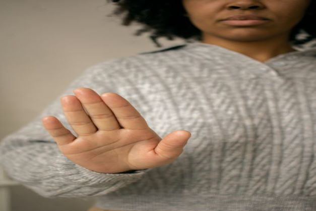
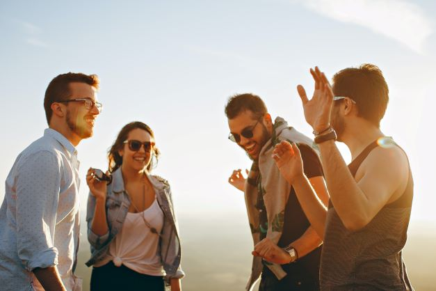

A LifeStyle Blog
Psychological Resilience

Have you ever thought about the fact that 18.5
percent of the adult population in the United States experiences
mental illnesses? (Bekiempis, 2014). This means that nearly one in
five adults is struggling mentally, and it also means that multiple
people we know are facing depression, anxiety, or some kind of
mental illness at some level.
However, what is most shocking is the fact that we
as a society are afraid of talking about it. We are afraid of not
knowing how to deal with it if either us or someone we know is going
through it, and the worst is that we make people feel ashamed for
the fact that they experience mental illness.
Nevertheless, our minds, just like our bodies,
need attention. If we break a bone or have an infection, we go to
the doctor; therefore, we should care for our minds the same way.
One way we take care of our physical health is by creating
resilience.
In order to develop this resilience of the mind, we must consider three elements that are essential: challenge, commitment, and personal control. As we develop this resilience of the mind, it will help us as our minds are stronger to face mental illnesses and overcome them, it will positively affect our physical help, and help us increase our decision-making ability.
Challenge
Changing the way you see the events in your life can strengthen your mind.
Commitment
Commit to your life and to those around you.
Personal Control
You are in control.
Connection
Feeling real connection will empower yourself.